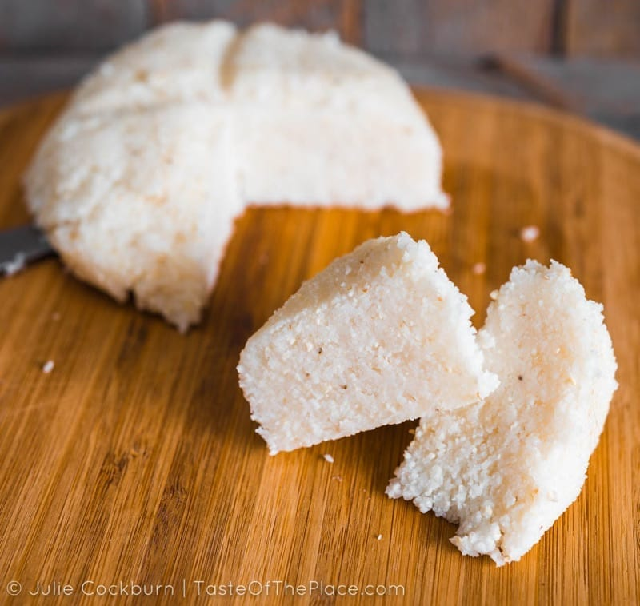

RECIPES
Other Recipes
UGALI, na NYAMA CHOMA
Ingredients:
- 200g of Maize Flour
- 1kg of beef
- Diced onions
- Grated onions
- Cooked Sukuma Wiki
- 1kg of boilt beef

Ugali:
- Boil a litre of water
- Place the boilt water into a sufuria
- Add the flour into the boilt water
- Stir the mixture till it sticks together
- Turn of the heat

Nyama choma:
- Put 4 table spoons of oil into a heated pan
- After the oil heats up add the diced onions
- When the onions turn golden brown add the garlic for 20 seconds
- Add the meat and fry till ready

Serve and enjoy
ABOUT